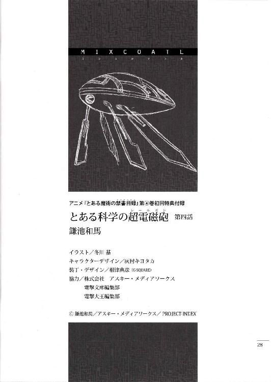
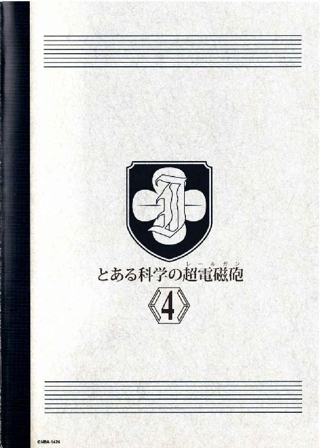

| [鎌池和馬] とある科学の超電磁砲4 | |
| 鎌池和馬 | |
| (2015) | |
|
アニメ『とある魔術の禁書目録』
第④巻初回特典付録
|
とある科学の超電磁砲
第四話
二日目の夜。
御坂美琴達は、『夕飯の後に行われる予定の』先生からの点呼を敢えて待つと、夜も更けてから、宿泊するホテルからわざわざ少し離れた所にあるレストランに足を運んでいた。全体的なグレードならホテルの方が上。お店の雰囲気もややごみごみしていて、広さもそんなに大きくないのだが、美琴達はわざわざここを選んでやってきた。
理由は単純。
ケーキビュッフェは乙女の戦場であり、女子中学生は今日も戦うツワモノどもだからだ。
「むふもぐがつがつ!! よっ、ようやくショートケーキ祭りを全制覇です!!ようし！この調子で次はチョコレートケーキ天国へ突入ですよーっ!!」
「だぁー、ほら初春さんゆっくり食べなさいって。それと、あっちの方からさらに追加の新作ショートケーキが運ばれてきているわよ」
「むぐーっ!?」
とにかく見た目のデコレーションが派手で高そうなケーキヘ片っ端から襲いかかる初春飾利と、フルーツ系のデザートを一切れ一切れ口に含む美琴。実はボリュームのあるケーキよりも小さな欠片のような果物デザートの方が数倍値段が高いのは内緒である。
と、そんな中で乙女達の戦いに参加できない者が一人。
ツインテールのエロ水着、白井黒子である。
「......ぐぐぐ......。わ、わたくしは向こうの方で、無難にサンドイッチでも食べてきますわ......」
「んー？ 黒子、アンタまだダイエットとか気にしてんの？」
「まだ!? まだとはどういう事ですのお姉様！それはまるで、もう努力をした所で何もかも手遅れ的なニュアンスにも受け取れますわよ!!」
「いやー、そうじゃなくてさ」
美琴は、花びらのように薄く切ったドラゴンフルーツを封じ込めた透明なゼリーに小さなスプーンを突き刺しつつ、
「学芸都市にいる間の一週間は、毎日三食ぜーんぶ外食なのよ？寮の食事みたいに定規で測ったような栄養管理なんてされてる訳ないし、どう頑張ったって栄養偏るに決まってんじゃない」
「ふぎゃあああああああああああああああああああああああああああああああああああ!?」
白井エロ水着の絶叫に、ビュッフェエリアにいたお客様達が一斉に彼女の方へ振り返る。どうやら女の子の悲鳴は万国共通らしい。
しかし周りからの視線など気にも留めない白井は、何やら両手で頭を抱えてブツブツ呟いている。逃げ場のない状況でぐるぐると考え事をしていた彼女は、やがてハッと顔を上げると、
「そっ、そうですの！ あらかじめ思いっきり運動して、太ってしまう分だけ事前に痩せておけば、ケーキを食べても結果的にプラマイゼロですの!!そうと決まれば!!」
そりゃーっ!! という掛け声と共に、ビュッフェエリアを飛び出してどこかへ走り去っていく白井黒子。その肌色だらけの背中を見送りながら、初春は言う。
「あーあ......一度ビュッフェエリアから出ちゃったら、もう無料サービスは無効になっちゃうのに。またお金を払う気なんですかね」
「っていうか、あらかじめ思いっきり運動して、そのまま我慢していれば、さっさと努力目標に到達できるんじゃないの......？」
美琴は呆れたように呟いたが、当然ながら夜の浜辺を爆走しているであろう白井には届かない。
初春はしばらくの間、見た目はド派手だが実はそんなに高くもないチョコレートケーキをフォークで切り分けて口の中に放り込んでいたが、やがてポツリとこんな事を言った。
「佐天さん、どうしちゃったんでしょうね」
「そういえば、あの子遊び疲れたから寝るって言ってたけど」
「うーん。あのお祭り好きの佐天さんがそんなあっさりギブアップするとは思えないんですけど......」
佐天の事を少し心配しているのか、初春の表情がわずかに曇る。
美琴としては、佐天が『係員』の連中にちょっかい出されたりしていないだろうか、と勘繰ったりもしたくなるが、今の所、『係員』の方も様子見しているらしい。
それは、あの壊れたトビウオが並べられていた区画で聞いた額面通り『超電磁砲』や佐天を殺すつもりはないからか、あるいは『あの程度の機密ならまだ即刻「アトラクション」扱いしなくても問題のないレベル』だったのか。
「......それにしても、今日は一体何だったんでしょうね」
その言葉には、探るような、不満そうな、そんな感情が込められている。
「いくら客を驚かすためとはいえ、街中であんな抜き打ちのアトラクションをするなんて。事前に通達したら面白くならないのは分かるんですけど......。建物の壁にも演出用の爆薬が仕掛けてあったみたいですし、それにしてはちょっと客に対する安全チェックがずさんだと思います。怪我する人が出たらどうするんでしょう」
「......、」
美琴はどう答えるべきか、少し迷う。
初春が言っているのは、今日の昼間に学芸都市のあちこちであった爆破事件だろう。例のトビウオみたいなのが集団でやってきて、学芸都市の建物やアトラクションに向けて数十発のミサイルのようなものを撃ったのだ。さらに他にも、複数の爆発が起きていたような気もする。
辺りの観光客の世間話に耳を傾ける限り、『アトラクション』自体は定期的に手を変え品を変え色々行っているようだが、トビウオのショーはこれまでもちょくちょくあったようだ。
流石に、勘の鋭い人はそろそろ危険な匂いに気づき始めている。
とはいえ、大真面目な顔で危険を主張した所で、その他九割を超す平和ボケした観光客達から鼻で笑われ、フィクションと現実を混同するなよ、そういう趣向のショーなんだからさ、という事でまとめられてしまう。
通常なら、まずありえないスケールの破壊。
しかしこの映画の街では、そのありえないスケールそのものが売り物にされている以上、人々は縮尺の違いに気づいた所で、それを本当に異様な事態とまでは思わない。
当然ながら、御坂美琴は『事態』には気づいている。
だから、ここで彼女が悩んでいるのは、初春の台詞に肯定するか否定するか、という事だった。
学芸都市は何かを隠している。
単に集客して利益を得るテーマパークではない。
それは外部から襲撃者を招いてしまうような事柄である。
ただ、闇雲に初春の不安を煽った所で、より一層彼女を危険な位置へ追い込んでしまうリスクも否定はできない。昨日の夜、壊れたトビウオがたくさん並べてあった格納庫で出会った『係員』の対応を見るだけでも、その『リスク』は相当に大きなものだというのは想像できる。
（さて、初春さんにはどう答えるべきか......）
美琴が思案していた、その時だった。
「おっねえっさまーん!!」
ズバーン!! と扉を大きく開け放ち、再びビュッフェエリアヘカムバックしてきた白井黒子がそんな大声を出した。
「うっ!? ち、ちょっと待ちなさいよアンタ！そんな短時間でケーキ分の体重が減る訳ないでしょ！アンタ早速飽きてギブアップしてるだけじゃ───ッ!?」
「フリーハーッグ!!」
「ぐわーっ!? 唐突に抱き着いてくんなこの馬鹿!!あ、あれぇ、おかしいな......。水着の女にくっつかれているはずなのに、さっきっから肌の感触しかしないんだけど......？」
「ハグは無料で人の心を穏やかにするボランティアなのですわ。さあお姉様からもギューッと一発!!」
「この大馬鹿野郎!! フリーハグはアンタみたいな性欲の塊がやるべきものじゃないのよ!!」
襲いかかる肌色の肩と頬を掴み、ぐいぐいと遠ざけようとする美琴。
馬鹿の乱入のせいで何を考えていたのかすっかり忘れてしまった。
「は、あはは......」
初春飾利はそんな二人から微妙に二歩ほど遠ざかり、巻き込まれないよう距離を調節しながら、巨大なモンブランを自分の皿に載せる。
ぎゃあぎゃあと喚き続ける常盤台中学のお嬢様達を眺めながら、初春はふと思った。
表情を、ほんの少しだけ曇らせて。
（それにしても......佐天さん、何があったんでしょうか......）
ベッドサイドに置かれたフロアランプの淡い光が、佐天涙子の頬をオレンジ色に照らす。水着のままベッドの上に体を投げ出した彼女は、特に何をするでもなく、ただぼんやりと考え事をする。
昼間起きた事。
建物の爆発と、地中から現れたトビウオみたいな機体。
そして、ショチトルという少女。
（......、）
小さな布に包まれた尻を揺らすように、佐天は寝返りを打つ。
淡い光を反射する黒い髪が、彼女の動きを追うようにベッドに広がる。
自分が昼間見たあの光景が、何らかのショーの一環だとは思えなかった。それは、まぁ、これだけスケールの大きなテーマパークだ。飛び入りで観客を参加させるタイプのショーだっていくつも開催されているだろう。だけど、今日この目で見た事に関しては、違う。通常、そういうショーは終了後にスタッフの一人でもやってきて『ありがとうございました』の一言ぐらいはあるものだと思うし......何よりも、いくら平和ボケして危機感の鈍った佐天にも分かる。こめかみの辺りがピリピリ来る不快感に、心臓を鷲掴みにされたような圧迫感。お化け屋敷や絶叫マシンのように、あらかじめ設計された安全地帯から楽しむ危険ではない。正真正銘、死という名のリスクは眼前にまで迫っていたのだ。
だとすれば、
（......昨日、初春達と浜辺で見た、あのラヴィーゼ飛行隊とトビウオのショーはどうだったんだろう？）
まさかと思うが、あれも脚本通りの演劇ではなく、本物の戦闘だったとでも言うのだろうか。馬鹿馬鹿しいと一笑したいが、昨日見たトビウオと、今日見たトビウオは同じものだったような気がする。
佐天は少し頭を働かせて、構図を考える。
学芸都市へやってくるトビウオと、それを止めるように戦うラヴィーゼ飛行隊。
そして今日、目の前で見た建物などの爆破。
それを考慮すると、トビウオは悪の手先で、ラヴィーゼ飛行隊は魔の手からみんなを守る正義の味方......と判断するのが妥当なようだ。
トビウオは悪。
すると、トビウオに乗って、去っていったショチトルは......？
「......、」
思考を断ち切るように、佐天は瞳を閉じた。
出会いは最悪だったし、言われてみれば何度も『言う事聞かないと殺す』とか脅されていたような気もする。しかし何故だか、佐天はその言葉に、それほど命の危機を感じていなかった。確かにトビウオが巻き起こした爆発はすごかったが、どうもショチトルの言葉は、ああいう直接的な破壊行為とは切り離され、どこか焦っていたように感じられたのだ。まるで、そういう建前を通して、佐天にお願い事をしているようだった。
あの褐色の少女が、どうしても単なる悪人とは思えない。
いや、佐天涙子にそんな人の内面を探る能力も経験もない。彼女は単純に、ショチトルという少女が悪人であってほしくないと思っているだけだ。
「ショチトル......」
思わず呟く佐天。
と、そこで彼女は目を開けた。
気づいたからだ。
（......あれ......。そういえば、確か昨日の昼にあった『ショー』の時は、あのトビウオを追い払うために、御坂さんが戦っていたような......？）
そして、昨日の夜。
美琴は学芸都市をウロウロして、佐天と一緒に壊れたトビウオがいっぱい並べられた場所へと入っていた。詳しい事は聞かなかったが、今思えば、まるで何かを探っているかのように。
当然ながら、部外者の美琴が学芸都市の手先であるはずはない。
わざわざ仮初の『ショー』の演出に付き合ってやる義理はないだろうし、立入禁止エリアの鍵なんてもらっている訳がない。
となると、
（......御坂さんは、何かを知っている）
そう思った瞬間、佐天涙子はガバッ!! とベッドから起き上がった。
もう夜も更けているが、そんな事を気にしていられる余裕はない。
（聞かなくちや。御坂さんは、この学芸都市の事も、あのトビウオの事も......それから、ショチトルの事情も知ってるかもしれない!!）
とっさに携帯電話を掴んだが、電源を切っているのか、相手には繋がらない。シャワーでも浴びているかもしれないし、最悪、もう遊び疲れて眠ってしまっている可能性もある。
佐天は少しだけ気が引けたが、結局美琴の部屋を直接訪ねる事にした。財布代わりのＩＣカードを首に引っ掛けると、廊下へ繋がる客室のドアを開け放つ。
佐天涙子の背中が、学芸都市の夜へと吸い込まれていく。
昨日の夜。
同じように部屋を飛び出し、死の寸前まで追い詰められた事をすっかり忘れて。
「いやー。なんだかんだで食べちゃったねぇ」
美琴はミルクをたくさん注いだアイスティーを口に含みつつ、そんな事を言った。彼女達の宿泊するホテルにはたくさんの喫茶店やレストランがあり、美琴が今くつろいでいるのは、三階の端の方にある、ちょっと入口の分かりにくい、こじんまりとした喫茶店だった。元々ラストオーダーで店から締め出された人向けなのか、ホテルの付属にしては珍しく、朝の六時ぐらいまで開いている深夜営業の店だ。
立地か、時間か、そういう雰囲気を作るのに尽力しているせいか、客足は少なく、しかしそれはデメリットではなく、美点として捉えられた。時計の針を見ていないと、時間の流れを忘れそうになるゆったりとした店構えが、何とも美琴の好みである。
初春は冷たいココアの入ったカップを掴んだまま、あちこちをキョロキョロと見回す。
「ふええー......。御坂さん、白井さんも、学芸都市に来るのは初めてなんですよね。よく、こういうお店を一発で探し出せましたねー......」
「まぁ、使えるお店に共通する、いくつかのチェックポイントみたいなものがあるんですのよ。世界中の料理をいちいち全部食べてチェックなんてしていられないでしょう？多少、場数を踏めばお店に入らなくてもランクが分かるようになりますわ」
「敢えて予想と違うお店に入って、新しい経験値を積むっていうのも面白いんだけどね」
白井と美琴はさも当然のように言うが、初春としては、うわーうわーと馬鹿みたいな感心をするしかない。そもそも『美味しいお店』ではなく『使えるお店』と表現している所が、すでにツーンとした孤高のお嬢様スキル全開である。
「昨日、今日と海ばかりで遊んできましたし、そろそろ明日辺りから内陸にあるメカニカルエリアの絶叫マシンとか、そっちの方に挑戦してみましょうか？」
「向こうも面白そうなんですけれど、行列ができているのが気に食わないんですのよね。この炎天下で二時間待ちとか言われたら堪らないですわ」
「......っつーか、アンタの水着で絶叫マシンに乗ったら、全部風に乗って飛んで行っちゃったりしないのかしら......？」
想像するに恐ろしい光景を思い浮かべて、ぶるっと身震いする美琴。
初春はちょっとだけため息をついて、
「佐天さんも、遊び疲れたからとにかく寝たいって言ってましたね。あのお祭り好きがあっさりダウンしてしまうなんて、もしかして、時差に体がついていかなかったんでしょうか。明日には元気になっていると良いんですけど」
「そういやあの子、ご飯はどうしたんだろね。ルームサービスで済ませちゃったのかな」
「まぁ、何があったか存じませんけど、怪我や病気という訳でもあるまいし。それほど心配する必要はないんじゃありませんの？本当に時差のせいなら体を慣らす以外にやる事ありませんし」
「うーん......。佐天さん、大丈夫かな......」
首を傾げる初春。
彼女達はおしゃべりをしながら、隠れた名店の雰囲気を楽しんでいく。
「あれ？ いないのかな......。御坂さん。御坂さんってば！」
佐天涙子は客室のドアを控え目にノックしながらそう言った。マンションや学生寮と違ってインターフォンが存在しないため、向こうがシャワーを浴びていたり眠っていたりした場合、ノック程度では相手に届かないだろう。
かと言って、時間が時間であるために、まさか大声で名前を叫ぶ訳にもいかない。廊下こそ均一な光に照らされているものの、周囲に人がいないせいか、それはどこか寒々しい雰囲気をまとっていた。
（どうしよう......？）
一旦自分の部屋に戻って、美琴の部屋の内線に電話をかけてみようか......とも考えたが、どうも佐天の感覚だと、美琴は部屋にいないような気がしてきた。
と、
「ん？ 何をやっているの、こんな所で」
「ッ!?」
突然真後ろから話しかけられて、佐天はビクリと肩を震わせた。
そちらに振り返ると、金髪爆乳の天才少女系映画監督・ビバリー＝シースルーが立っていた。彼女は、部屋のドアの前に佇んでいる佐天を見て首を傾げながら、
「......まさかと思うけど」
「な、何ですか？」
「部屋にキーを置いたままオートロックの扉を閉めてしまったとか、そういう展開？だったら悩んでいても無駄だから、フロントヘ行った方が良いと思うよ」
「そんな恥ずかしい真似しませんよ......」
佐天はぐったりしたまま、
「知り合いの部屋を訪ねたんですけど、寝ているのか部屋にいないのかって感じです」
「訪ねる、ね」
ビバリーは携帯電話の画面を見て、今の時間を確かめながら、
「......もしかして、時差ボケ？ それもそれでつまらない展開ってヤツだと思うけど」
「つか、ビバリーさんは何やってんですか？」
「んん？ とりあえず今日の仕事は終わったから、趣味と臨時収入のためにカジノヘ行こうと思っている所よ。学芸都市のカジノは州法の関係で、未成年でも遊べるからね」
「......そういや、結局カジノってどこにあったんだろ？あそこには変なガラクタしかなかったし......」
「？」
佐天の独り言に、ビバリーはキョトンとしていたが、
「まぁ、明日が辛くなるから早めに寝ておいた方が無難よ。時差ボケというのは後からズドーンと響くものだからね」
「はぁ」
佐天が適当に返事をすると、ビバリーはどこかへ立ち去った。彼女と一緒に行動すればカジノの場所が分かるはずなのだが、佐天はそうしない。今はそれよりやるべき事がある。
（今すぐショチトルの事を知りたいのに......）
佐天は行儀悪く親指の爪を噛み、サンダルを履いた足でトントンと床を叩く。美琴の部屋の前をしばらくウロウロ回っていた佐天は、やがてピタリと動きを止める。
（あの子が一体どこの組織に所属していて、どんな所からやってきたのかは分からない）
つまり、ストレートにショチトルの事を調べようとしても、材料が足りない。
（でも、おそらく、この学芸都市で起きている事は一つに繋がるはず。ラヴィーゼ飛行隊とトビウオが戦っているなら、彼らが『戦う理由』は共通のものじゃないとおかしい。となると......学芸都市の方を調べる事で、何でトビウオが襲ってくるのか、ショチトルはこの街で何をやっていたのかも分かってくるはず......）
そこまで考えると、佐天は爪先を美琴の部屋からよそへと向けた。
学芸都市を調べる。
最も怪しい場所には、心当たりがある。
いつまでも喫茶店でダラダラやっていたかったが、せっかく巨大なテーマパークに来ているのに、明日一日をベッドでグースカ眠って使い潰すのはもったいない。そんな訳で、今日の所はひとまず解散する運びとなった美琴、初春、白井の三人。
彼女達はエレベーターホールヘ向かうため、三階喫茶店から吹き抜けとなっているロビーヘ向かいつつ、
「でも、夜のテーマパークもライトアップされて綺麗ですよねー。ほら、映写機を使って海面に直接映像を出しているんですよ。パンフには、幻想的に輝く光の海を泳いでみようとかって書いてありましたけど」
「そうかな。私はなんか、暗い海っていうと、ちょっと怖いイメージがあるけどなあ」
「夜の海で遊ぶ場合は、腕輪を借りるみたいですわよ。溺れている人を目視で確認するのが難しいから、いざという時はボタン一つで位置信号を発信できるようになっているんですって。あと、腕輪には五分間ぐらいの酸素カプセルが入っているんだとか」
そこまでやるなら救命胴衣でも貸し出せば良いのに、と美琴は思わなくもないのだが、あのゴワゴワした救命胴衣をつけると動きづらかったり、見た目がダサかったりするので不評なのだろうか、と適当に推測する。
「まあ、パレードのある日を狙って、こっそりホテルから抜け出そうか。一応、引率の先生には見つからないようにね」
「......今も見つかったら説教間違いなしの時間帯ですけれどね。あら初春、どうかしましたの？」
「い、いえ、何でも......」
初春は巨大な吹き抜けから下方を眺めていたが、白井に言われて慌てて視線を戻す。彼女は心の中でわずかに首を傾げつつ、
（うーん、気のせいですよね......？）
自分に確認を取るように、声には出さずにそう思った。
吹き抜けの下、一階ロビーの出入り口の辺りに、佐天涙子が歩いているような気がしたのだ。
目的地はあそこしかない。
佐天涙子は一直線に進む。目指す場所はホテルから離れた所にある、学芸都市の中心に聳えるランドマーク。ＳＦ映画撮影時にロケット発射場として使われた三キロ四方の巨大なセットだ。昨日の夜はカジノの入口と間違って、美琴と一緒に入ってしまったのだが......。
「ん？ あれ......開かない？」
佐天はドアノブを掴んだのだが、ガチャガチャと音が鳴るだけでほとんど動かない。確かにドアの横には電卓みたいな装置がくっついているのだが、昨日の時点では特に何もしなくても、ノブをひねっただけであっさり開いたはずなのに。
（どういう事なんだろう......？）
実は厳重なロックがかかっていて、それを美琴が自分の能力を使ってこじ開けた───という事には気づかない民間人の佐天涙子。ちなみに、仮にこのドアが開いたとしても、その先には大量のセンサーが待ち構えている事も全く考えが及んでいない。
ともあれ、今の佐天に分かっているのは、以下の一点のみだ。
このドアは開かない。
となると、こことは違う、別の『入口』を探さなくてはならない訳になる。
（でも、そんな都合の良いものが......、待てよ）
佐天は頭を抱えかけて、そこで気づいた。
ある。
木当に同じ所に繋がっているかどうかは分からないが、少なくとも確実に、学芸都市の立入禁止ゾーンヘ繋がる出入り口を、佐天涙子はもう一ヶ所知っている。
そうして、佐天がやってきたのは、今日の昼にショチトルと別れた場所だった。
浜辺からわずかに離れた所にある、ショッピングモール近くの遊歩道。そして、あのトビウオみたいな機体が砂の中から飛び出してきた地点だ。
仮にトビウオが立入禁止ゾーンからやってきたのなら、そこには巨大な『入口』が口を開いているはずである。
「あった......」
佐天は思わずポツリと呟いた。まるで殺人事件のようにkeep outと表記されたテープに囲まれた一角。ビニールシートに覆われた大規模な落とし穴みたいに、その『入口』は塞がれていた。
「......、」
佐天は周囲を見回したが、見張りの『係員』らしき者はいない。彼女はkeep outのテープの下をくぐり抜けると、ビニールシートの端を軽くめくってみる。
そこには道路工事に使う、畳よりも大きな鉄板が複数並べてあった。佐天は鉄板の端を掴んでみたが、とても持ち上がるとは思えない。建設重機が必要なサイズだ。
（うーん、どうしよう......）
佐天は鉄板を動かす事を諦め、何か使える物がないか探してみる。
と、その背中が、ドンと何かにぶつかった。
見れば、それは建物の壁に立てかけてあった、予備の鉄板だった。佐天がぶつかった事でバランスを崩したのか、重たい鉄板の下端が砂の上を滑るように倒れていく。
「わわわっ!?」
佐天が横へ避ける。スライディングのように下端の方から迫ってきた鉄板は、砂浜に空いた穴を塞ぐために置いてあった別の鉄板とぶつかり、強引にずらしていく。
（おっ、隙間が......）
鉄板が動いた事で、どうにか人間一人が追って大れるほどの大きさの隙間ができている。佐天は腹這いになり、隙間へ体を押し込んで中へ入る。
御坂美琴は自分の客室に帰ってきた。
今日一日、少しだけ注意深く周囲を観察してみたが、とりあえず『係員』達が余計なちょっかいを出してくる気配はなかった。盗聴などの可能性もおそらくゼロ。どうやら学芸都市の連中は、本当に美琴達が余計な行動に出ない限りは、わざわざ自分達から暴力的な手段に出るようなつもりはないらしい。
とはいえ、それは今後の行動次第。
美琴達が今よりもさらに厄介な損害を撒き散らす『敵』として認識されれば、学芸都市は本格的に美琴達を排除しようとするだろう。それは通り魔を装った直接的な奇襲かもしれないし、海を利用した海難事故として処理されるようなものかもしれない。
（でも......）
今日の昼間も、ラヴィーゼ飛行隊の戦闘機と謎のトビウオの戦いは、観光客の鼻先で繰り広げられた。しかも今回はトビウオの方が優勢だったらしく、学芸都市の複数の建物にミサイルのようなものが撃ち込まれるという事態にまで発展してしまった。
目立った死傷者は出なかったようだが、それだって結果論に過ぎない。
このまま放置しておいて良いはずはないのだが、
（調べるにしても、どうやって学芸都市の謎に近づくのか、っていう問題もあるわよね。ネットワーク経由では、回線に接続されていない機密情報には近づけないし......かと言って、直接的に施設に潜っても、また『係員』とぶつかるかもしれない）
流石の美琴でも、こんな都市クラスの巨大施設を丸ごと敵に回して大ゲンカ、というのは好ましい展開ではない。なおかつ、構図としては他国の機密エリアに勝手に侵入した美琴が、それを止めにやってきた正規要員を片っ端から薙ぎ払う、という事になってしまう。これでは誰がどう見てもテロリスト扱いだ。
トビウオが襲ってくるからと言って、『係員』が何かを隠しているからと言って、学芸都市が悪者であるとは限らない。むしろ、学芸都市には何らかの正当な理由があり、トビウオの方がそれを破壊しようとしているだけの可能性もある。
最悪、暴れるのは結構だが、仮に学芸都市に何の非もなかった場合は目も当てられない。物理的な手段に出るとしても、まずは善と悪を見極めておく必要がある。
（まぁ最悪、両方とも悪って可能性もある訳だけど）
美琴一人では限界があるのかもしれない。
彼女は、日本の学園都市からやってきた他の少女達の事を考える。
（......空間移動の黒子と、情報戦の初春さん、か）
三次元的な制約を無視して自由に移動できる白井の力を借りれば、壁や床や天井を無視して自在に建物へ潜り込む事ができる。『通路を通る者を前提としたセキュリティ』の死角を進む事も難しくはない。
そして風紀委員として現役で活躍する初春と協力すれば、特にネットワーク関連から情報を探る効率は上がる。それに、初春に情報の調査を任せて、美琴は周囲の警戒に集中する、という選択肢を採る事もできるようになる。
確かに、彼女達の力を借りられれば力強いのだが、
（でも、それを頼むとあの子達も巻き込む羽目になる......）
そこが苦しい所だ。
美琴としては、なるべくそういった展開は避けたい所である。
（さて、どう動くかな）
思案する美琴は、まだ動かない。
今から一人で動くという方法は、昨日の夜にも試した。そしてその方法は、昨日の夜で失敗している。同じ失敗を安易に繰り返すほど、常盤台中学のエースは短絡思考ではない。
清潔な空間だった。
どこかの工場というよりは、ＳＦ映画に出てくる巨大宇宙船みたいな内装の通路を、佐天は歩く。まだ体にはいっぱい砂がついていたが、ほとんど気にならなかった。それぐらいには、緊張しているのだ。
通路は縦横に入り組んでいたが、ある一定のルートだけ、壁や床がへこんでいたり、傷がついていた。おそらく、あのトビウオが強引に移動したせいだろう。佐天はその後を辿るように進んでいく。
実を言うと、こんなに都合良く進むとは思っていなかった。
係員とか警備員とか、とにかく誰かの影が見えたら、発見される前にさっさと引き返そう......そういう風に考えていた。しかし実際に蓋を開けてみると誰もいないようだし、おっかなびっくり歩いている内に、気がつけば入口から相当離れた奥の方まで踏み込んでいた。
所々に、思い出したように張り巡らされたkeep outのテープをくぐったり進行方向を遮る形で張られた黒いシートを掻き分けながら、佐天は歩き続ける。
（今、どの辺にいるんだろう......？）
最初は地下を歩いているつもりだったが、上下の小さな階段を何度も何度も通ったり、直径二メートル以上の円形のダクトの中を潜ったりしている内に、高さが分からなくなってきた。
（なんか、内装の感じが違う。このダクト......別の建物に繋がってる？）
どうも今の自分は地下にある通路を経由して、地上にある大きな建物の中を歩いているらしい、という事だけが、かろうじて掴めている状態だ。
佐天はとにかく先に進む。
学芸都市の謎を調べる、と息巻いている佐天だが、実は具体的に何を見つけるつもりなのかを全く考えていない。どこまで進めばゴールで、何を見つければ作戦成功なのかも分からないまま、リスキー極まりない調査はひたすら続く。
その時だった。
目の前の通路が途切れていた。四角く切り取られたトンネルの出口のようなものがある。佐天がそちらに向かって走ると、視界が一気に開けた。
「ッ!!」
そこは昨日の夜、美琴と一緒に来た場所だった。たくさんの壊れたトビウオが並べられた、巨大な格納庫のような場所だ。昨日入ってきた出入り口とは違うが、キロ単位の広さを持つ施設だ。入口が一つである方がおかしい。
ただし、昨日とは違う点がある。
清潔感に包まれていたはずの格納庫は、徹底的に破壊されていた。大きな爆発が何度も起きたのだろう。床には半径一〇メートル前後の黒々とした焦げが枯れた花のようにいくつも広がっていて、ただでさえ壊れていたトビウオ達が、消し炭やスクラップとなって、山積みにされていた。まるで巨大なホウキでゴミをかき集めたみたいだった。
破壊されているのは、保管されていたトビウオだけではない。この建物自体も大きく歪められていた。金属製の床板が破れたストッキングのように引き裂かれ、天井から降り注ぐ照明も、半分ぐらいが砕かれている。格納庫上部を走る鋼鉄製の通路も爆発によって大きくへし折られ、佐天が今立っている場所のすぐ近くまで垂れ下がっていた。
（ショチトル......）
どんな理由があったとしても、これをやったのは、間違いなく彼女達だ。
あのトビウオが街を破壊したのだ。
それを思うと胸が締め付けられる佐天だが、ここで止まる訳にはいかない。
崩れかけた鋼鉄製の通路が降り注いで来ないかビクビクしながらも、彼女はスクラップとなったトビウオヘと近づいていく。
ショチトル達が乗っていた機体。
昨日も、美琴はこれを調べようとしていた。おそらくは、ラヴィーゼ飛行隊が撃墜した機体をここへ運び込んでいたのだろう。トビウオが学芸都市にとって『本物』の敵だとするなら、目的は単純。敵の事を調べるために。
「......、」
ただ、佐天の前にあるのは、本当に単なるゴミの山だった。木と布と黒曜石でできたトビウオを、巨大な歯車で一度全部噛み砕いた後、その残骸を適当に積んだだけ。そんな印象しか与えてこない。
ショチトル達は、ここで何をしようとしていたのか。
昼間、佐天の目の前で仲間と会話していたショチトルだが、どこの国のものか分からない言葉を使っていたため、その内容はヒントにならない。
（......このトビウオを壊すのが、ショチトル達の目的......？）
佐天は少し考えたが、首を横に振った。違う。このトビウオ達は、ラヴィーゼ飛行隊と戦って撃墜されたものだ。つまり、戦っている最中に奪われてしまったものにすぎないのだから、そもそもこれが『戦いの始まり』となる事はない。
もっと大きな理由がある。
でも、その一番大きな理由は、ここを探るだけで分かるものなのだろうか。今日の昼間に見た爆発は、学芸都市のあちこちで起きていた気がする。もしかすると、この格納庫は『寄り道の一つ』にすぎず、本命は全然違う施設にあるのかもしれない。
（どうしよう......。ここをもう少し調べるか、それともよそに行ってみるか）
そう思った時、佐天はふと違和感を覚えた。
原因は壁。
やはり大きな爆発によって、金属製の大きな壁はアルミホイルのようにベコベコとへこみ、所々に細い亀裂が走っていた。しかし、どこかおかしい。佐天はトビウオの残骸の山から、分厚い壁の方へと近寄っていく。改めて、顔を近づけて注意深く観察してみる。
違和感の正体はすぐに分かった。
この壁は、そもそも壁ではなかったのだ。
（これ......扉なんだ......）
大型旅客機の組み立て工場のように、壁一面が大きく横にスライドして開閉するように作られていたのだ。あまりにもスケールが巨大であったために、佐天はそれをずっと『壁』だと思い込んでいたのだ。いや、たとえスライドするとしても、それは『壁』と呼んでも間違いではないだろう。何しろ厚さだけで一メートル以上はありそうなのだから。
当然ながら、こんなに巨大な扉は佐天の手では動かせない。
探せばどこかに開閉スイッチがあるかもしれないが、こんな大規模な装置を動かしたら、絶対に誰かがやってくる。
それでも、よほどこの格納庫で巻き起こった爆発は凄まじかったのか、巨大な扉のあちこちは歪められていた。佐天は扉に沿って走ると、やがてスライドする扉と扉の境目を発見する。予想通り、歪められた扉と扉の間に、わずかな隙間が開いてしまっていた。
隙間の大きさは縦が一メートル前後、横は一〇センチぐらいか。
体を通す事はできない。
佐天は隙間から奥を覗き込む。
その先にあったのは赤っぽい色の光だった。やはり、扉の向こうには、さらに謎めいた空間が広がっている。大きな物体が置いていない。広大な空間の一〇〇メートルぐらい先に、このスライド扉と同じような『壁』がある。どうやら消毒・殺菌などに使う二重扉のようなものらしい。本命の空間は、あの『壁』のさらに向こうに存在するのか。
（ああもう......もう少し......もう少しで、何かが分かるのに......ッ!!）
思わず扉の隙間に両手を突っ込むが、やはりそんなもので隙間は広がらない。
その時、
佐天涙子は、見た。
「..........................................................................................................................................................................................................................................、」
隙間の向こうの広がる、赤っぽい色の光に包まれた空間に、何かがあった。
色のついた照明のせいで見えづらくなっていたが、それは紙幣ぐらいの大きさの、赤いラベルだった。隙間の近くにある床に一枚、それから改めて観察すると、床や壁、そしておそらく天井にも、ベッタベタと何十枚、何百枚と貼り付けてあるのが分かる。病的、神経質、過剰演出にも思えるほど入念に貼り付けられた赤いラベルに記されているのは、短い英文だ。中学一年の教科書レベルの英語しか使えない佐天でも、その警告じみた強い語気は十分に窺えた。
細かい文法などは知らない。
とにかくそこには、こんな事が書かれていたのだ。
汚染注意。
全職員の立ち入りを禁じる。
佐天涙子の呼吸が止まった。思わず口元に手をやり、隙間からふらふらと後ろへ下がる。それから、今まで何故、係員や警備員といった人間と一度も出会わなかったのか、通路に張られたkeep outのテープや遮るように張られた黒いシートは何のためのものだったのか、佐天は大雑把に最悪の展開を思い浮かべる。
（なに、これ......）
ショチトル達が破壊しようとしているもの、そしてこの分厚い扉によって阻まれてしまったものの正体が、ほんのわずかに垣間見えた気がした。
（何なのよ、これ......ッ!!）
これはもう、佐天一人の手に負える問題ではない。いや、そもそも一人でやってくるべきではなかったのだ。ホテルには、大能力者の白井黒子や超能力者の御坂美琴がいる。初春飾利にしたって、普段は頼りないけど、日本の学園都市の治安を司る組織、風紀委員の一員だ。彼女達に相談した方が良い。この危機は、昼間に起きた爆発の比ではない。死の恐怖が、佐天の胸を正確に貫いている。
だが、佐天の体は動かなかった。
一刻も早くここから離れなければならないのに、指一本動かせなかった。
彼女は自分の背中に、何らかの圧力を感じた。実際に何かが触れている訳ではない。風が吹いている訳でもない。一般的な五感とはかけ離れた、気配や予感といった曖昧なものが、佐天涙子の心に強烈な危機感を叩きつけてくる。
「いけませんね」
しっとりとした、大人の女性の声が聞こえた。
まるで大企業の受付嬢のように丁寧な言葉遣いなのに、それを聞いただけで、佐天は心臓が止まるかと思った。
背後の女性は構わず続ける。
「一応、昨日もここでこう言わせていただいたはずですよ。穏便には済ませられない、といったような事を......」
昨日の時点では見えなかったもの。
御坂美琴には発見できず、佐天涙子だけが発見してしまったもの。
それを前に、死刑宣告のように、女性は同情心すら言葉に乗せてそう告げた。
「......、」
その時、佐天涙子は自分の表情が分からなかった。
自分自身の心の整理すらつけられないまま、佐天はただ、運命という見えない巨大な腕に頭を掴まれたように、ゆっくりと、ゆっくりと背後を振り返る。
そこには......、
アニメ『とある魔術の禁書目録』第④巻初回特典付録
とある科学の超電磁砲 第四話
鎌地和馬
イラスト／冬川基
キャラクターデザイン／灰村キヨタカ
装丁・デザイン／根津典彦(GｰSQUARE)
協力／株式会社 アスキー・メディアワークス
電撃文庫編集部
電撃大王編集部
Ｃ鎌池和馬／アスキー・メディアワークス/PROJECTｰINDEX

